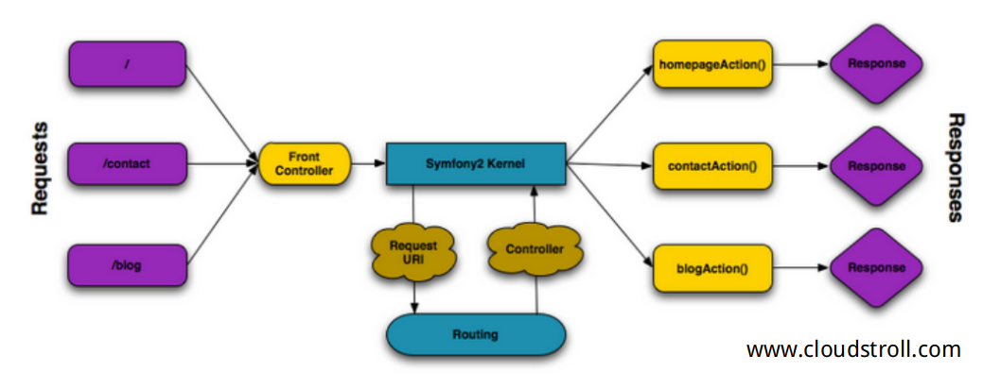

当你用Symfony来处理所有请求的时候，所有的事情就都变得容易起来。Symfony对任何一个请求都遵循如下的简单模型：

所有接收的请求均会被路由处理并传递给控制器方法，然后返回响应对象。
娃那个站路由的作用是配置不同的URL指向不同的PHP方法。你网站上的任何一个页面都需要在路由配置文件中定义。每一个被称为控制器（controller）的PHP方法，都在使用请求传过来的信息、Symfony提供的一些其他可用的工具来创建响应对象。换句话说，控制器就是一个你的代码运行得地方，是解释请求并生成响应的地方。就是这么简单！回顾一下：